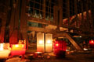

2006.10.27., péntek
tomcat
blog
droidzóna
levrov
Reggel, vagy inkább délelõtt a telefon ébresztett. Athinának több lelkiereje volt elõmászni és megkeresni a csörömpölõ pokolgépet. Pár szót beszélt valakivel, aztán visszajött, és közölte, hogy szabad vagyok. Vagyis feloldották a házi õrizetet. Egy nappal a lejárata elõtt, micsoda kegy.
No de mihez kezdjek ezzel a hirtelen nyakamba szakadt szabadsággal? Elõször is elmentem ebédelni a Móricz Zsigmond körtérre, meg koccanni kedves vádlott-társammal, Szilvási Petivel. Kedves rajongóim kedvéért közlöm, hogy az Esti Hírlap nem engem emlegetett a tévéostrom másnapján "30 éves, büntetett elõéletû férfi"-ként, akit a III. kerületben tartóztattak le a Szabadság téri ruszki emlékmû megrongálása miatt. Én ugyanis nem vagyok sem büntetett, sem III. kerületi, ellenben Peti ott lakik, de õ sem büntetett, és nem is 30 éves. Tetszik ismerni a viccet a jereváni rádióról, ugye? Pedig egyesek hogy ujjongtak, hogy "végre" börtönbe kerülök, egyesek annak a reményüknek is hangot adtak, hogy "mivel orosz tulajdont rongáltam", majd orosz bíróság ítél el, és Szibériába kerülök kényszermunkára. Igen, ezt teljesen komolyan gondolták, és ilyen embereknek szavazójoguk van. Szóval Móricz, jött a Peti, aztán leesett állal bámultuk azt, amit ott láttunk. Hogy mit láttunk? Ezt láttuk.
Ezt láttuk, kérem szépen. Igen, ez ugyanaz az emlékmû, aminek a rongálásával vádolnak bennünket, Budaházy Gyurit pedig körözik és életfogytiglannal fenyegetik. Üdvözöljük Abszurdisztánban.


Ha valakinek kétségei lennének: a kis kiállításon nem csak hogy szerepel ez a kép, de egyenesen ez a fõ témája
Azért van itt más is. Például droidok. Valaki úgy gondolta, csakis azzal fejezheti ki tiszteletét 1956 hõsei felé, ha a kiállított képen áthúzza a szovjet tisztet. Nincs ott, mi gyõztünk!
Ebéd után még mindig nem tudtam mit kezdeni magammal, hát, akkor mondjuk, nézzük meg, mit szerencsétlenkedik a Kossuth tér maradéka. Állítólag a Városház téren folytatják a gyülekezést, ahol a libsik sátra állt. Felültem a 49-esre, elzötyögtem odáig, ám a helyszínen csupán egy sebtiben felhúzott kordont találtam, amibe a nagy igyekezetben még az '56-os fotókiállítást is belezárták.
Odamentem a kerítéshez, kisvártatva elõ is kerültek néhányan a gumilövedékes fiúk közül, és a személyimet kérték. A Gumilõszer- és Rendõrbot-felhasználó Kht. munkatársai (a Fakabát Rt. jogutódja) legalább hat kocsival és furgonnal dekkoltak ugyanis a helyszínen, és természetesen még mindig nem szeretik a fekete ruhásokat.
Készültség a Madách téren
- Miért van elkerítve a tér? - kérdeztem a zászlóstól.
- Építési területnek nyilvánították!
- És mi épül?
- Azt nem tudom!
- És miért õriz egy építési területet egy szakasznyi rendõr?
- Nehogy a tüntetõk bemenjenek!
Aha, értem. Biztos, ami biztos.
A Városház térrõl átmetróztam a Kossuth térre, nézzük meg, mi van ott. A téren a helyzet változatlan: otromba kerítés, ocsmány paraván, rajta '56-os plakátok, amiket csak a rendõrök nézhetnek, és természetesen rendõrök. Még az 1956-os sortûz áldozatainak emlékmûvét sem engedték megkoszorúzni. Akik ezért jöttek - sokuknak szüleik, testvérük, társuk halt meg a magyar történelem legborzalmasabb tömegmészárlásában - kénytelenek voltak koszorúikat a kerítésre aggatni, mécseseiket a járdán hagyni. "Dicsõség a hõsöknek", hirdette odabent az óriásplakát.
Kossuth tér, 2006
A kerítés tele van már magánhirdetményekkel
A megemlékezõk kénytelenek a kordonra rakni koszorúikat
Lengyel-magyar két jó barát
Mécsesek
Újságcikkeket is kifüggesztettek. Ez itt például arról szól, hogyan próbálták hatósági eszközökkel megakadályozni, hogy a rendõrök által összevert pap nyilatkozzon a sajtónak. A cikk elolvasható a Hír TV weboldalán.
No comment
Etalon
Este Athinával elmentünk moziba, megnéztük a Szabadság, szerelem címû filmet. Nem sok reményt fûztem hozzá, Andy Vajna neve ugyebár nem a minõség garanciája. Arról nem is beszélve, hogy minden kormány idején elkészül ugyebár az aktuális politikai kurzusfilm, a Sacra Corona-tól a Sorstalanságig, mert valamiért minden kormánynak jut valami kerek évforduló, amire el kell szórni a pénzt, és az eredmény nagyjából ugyanazt képviseli, mint az Egy rém rendes család Budapesten, csak míg az utóbbiért kirúgják a készítõket, az elõbbiek "alkotóit" rendíthetetlenül ünneplik a következõ kormányváltásig.
De most nem! Megtört a turáni átok, vagy mi.
A Szabadság, szerelem az egyik legnagyszerûbb film, amelyet az utóbbi években láttam. De nem csak mint filmrõl lehet róla csupa szuperlatívuszokban beszélni. Ez a film csupa nagybetûvel MAGYAR, amilyen magyar csak lehet valami. Valami olyasmi mozdul meg az emberben e film láttán, ami valahonnan nagyon-nagyon mélyrõl jön, amit korábban csak egy Kormorán-koncerten vagy egy Wass Albert-kötetet lapozgatva érezhettünk. A vén zsidó csibész és csapata mögött elbújhat az összes kokárdás-turulmadaros mélymagyar rendezõ. Ilyen csodálatos filmet még soha nem készítettek a magyar történelem egyetlen epizódjáról sem. Nem hollywoodi giccs, és nem ócska magyar szerencsétlenkedés. Nem mesterkélt és nem túlspilázott, a történet sem ül le egy percre sem. A színészek valóban színészek, és nem ripacsok. Még a sokat fitymált Dobó Kata is megcsillant valami olyan színészi munkát, amit nem várna tõle az ember. Ebben a filmben õ tényleg nem Dobó Kata, hanem Falk Viktória, a forradalmár lány, úgy, hogy el is hisszük. Mi több: Budapest sem a mai Budapest, pár korabeli postaládával és biciklivel az utcán, de véletlenül ott felejtve egy autót a háttérben, s nincs az egész történet sem mesterkélten beszorítva egyetlen lepukkant józsefvárosi utcába. Ráadásul még a legelvetemültebb fegyverbuzi (pl. én) sem tud belekötni az akciójelenetekbe, az egyenruhákba vagy a fegyverekbe. Még olyan apróságokra is figyeltek, hogy például az alig pár másodpercre felbukkanó BTR-159-es csapatszállítót csak olyan szögbõl mutassák, ahonnan nem látni, hogy a fedett rakterû változat az, amit 1956 után állt rendszerbe. Én is csak onnan tudom, hogy az volt, hogy ismerem a jármûvet, amit a forgatáson használtak. (Valamint az október 23-i zavargások során, de ezt most hagyjuk.)
Csodálatos ajándék ez a forradalom 50. évfordulóját ünneplõ magyarságnak. S mellesleg nekünk, akik átéltük az elmúlt hetek történéseit, egyúttal a film elején végigfuthat a hátunkon a hideg: bizony, azok az arcok, azok a kulcsmondatok, amelyek itt egy színészi játék részeit képezik, nem csak akkor, az ötvenes években léteztek a valóságban, hanem most, 2006-ban is visszatérnek. Nem csak az "Aki magyar, velünk tart", hanem az is: "...legyen szíves, szálljon be az autóba, velünk jön."
"Azok, akik elfelejtik a múltjukat, arra kárhoztatnak, hogy újra átéljék azt."
- George Santayana
Ez a film egy generációnak fog segíteni, hogy ne felejtsük el. Oly nagyszerû munka, kevés tartott vissza, hogy a végén felállva tapsolni kezdjek. Köszönjük, Vajna úr, ezennel megbocsátjuk a Terminator 3-at. Nem akar filmet forgatni Gyurcsányról is?
Este elsétáltunk a Szabadság térre, megnéztük a félig lebontott ruszki oszlopot, s körülötte a golyóálló mellényben, símaszkban ácsorgó rendõröket. Innen átsétáltunk a Kossuth térre. Percenként cirkáltak a rendõrautók, a kordonnál pedig tíz-tizenkét ember ácsorgott és beszélgettek. Megtudtam, hogy "csoportosulásnak" a bírói gyakorlatban azon mennyiségû állampolgár minõsül, amit "egy pillantással nem lehet átfogni", egészen pontosan ez tizenkét fõ, mert ennyi és kész.
Egy ember jött, kezében virágcsokorral, és megkérdezte a bent álló rendõröket, bemehetne-e letenni az '56-os sortûz emlékmûvére.
- Maga szerint úgy néz ez ki, mint ahova be lehet menni?!
- Normálisan szóltam magához, igazán felelhetne normálisan - jegyezte meg az ember.
- Na, és normálisan is válaszoltam. Vagy nem ért magyarul!?
Ennek az embernek egyébként az édesapja halt meg ötven éve ezen a helyen. Ausztráliából jött haza, hogy ezt a pár szál virágot letehesse.
Este a Kossuth téren

Emlékezés
Vigyáznak ránk
Köszönet, mi?
Ez a fiatalember hosszasan hallgatta, amit hatan-nyolcan beszélgetünk, majd egyenesen odament a rendõrautóhoz, és hosszasan beszélt velük. Hogy mirõl, azt tõlük tessék megkérdezni.
Ez a srác itt svéd állampolgár, svéd útlevelét mutatja. Hogy mi ebben az érdekes? Az, hogy október 23-án õt is letartóztatták, majd ránéztek az útlevelére, és onnantól "rohadt román"-ként emlegették. Több nap kellett hozzá, hogy valaki felvilágosítsa õket, a "Sverige" szó melyik országot jelenti.

Lengyelek, gyertek!
Míg a taxit vártuk, megállt mellettünk egy rendõrautó, a benne ülõk szemügyre vettek, majd rádión jelentették, hogy mit csinálunk.
Édesanyám tegnap egy Made in Hungary polóban ment orvoshoz. A váróban aggódva kérdezték más, idõs emberek, hogyhogy nem fél ilyet felvenni?
Ebbõl kivándorlás lesz.